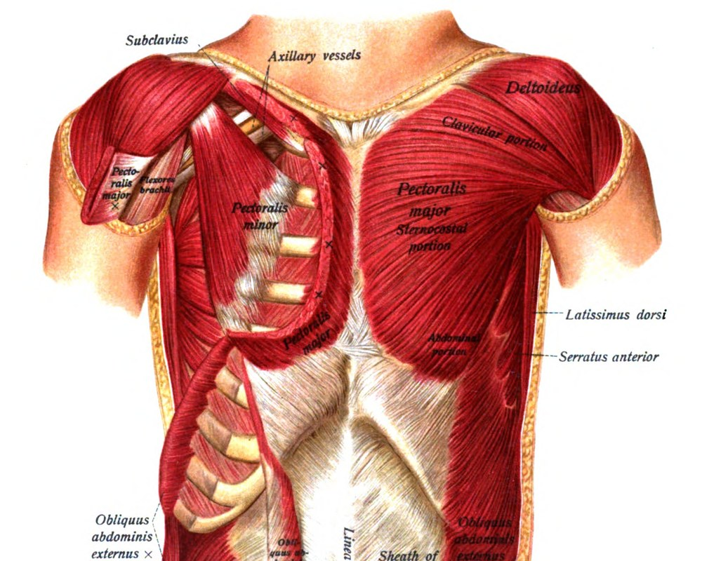
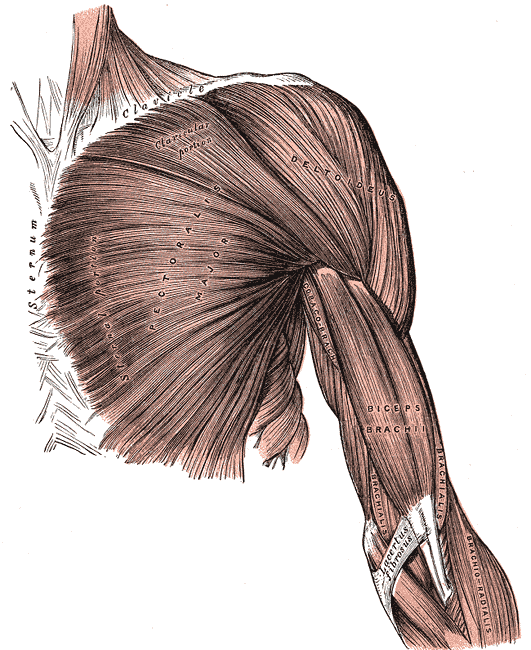

大胸筋Pectoralis major
胸の前面をおおう扇形の大きな筋。腕を前に出す・内側に閉じる・内側にひねる働きをもち、腕立て伏せやベンチプレスの主役です。

起始停止
図：Sobotta, Atlas and Text-book of Human Anatomy (1909) Fig.245（パブリックドメイン, Wikimedia Commons "Sobo 1909 245.png"）

図：Gray's Anatomy (1918) Fig.410（パブリックドメイン, Wikimedia Commons "Gray410.png"）
起始・停止・神経支配
| 起始 | 鎖骨部：鎖骨の内側半分 胸肋部：胸骨の前面、第1〜6肋軟骨 腹部：腹直筋鞘の前葉（外腹斜筋腱膜） |
|---|---|
| 停止 | 上腕骨の大結節稜（結節間溝の外側唇） |
| 神経支配 | 内側胸筋神経・外側胸筋神経（C5〜T1） 外側胸筋神経は主に鎖骨部を支配。髄節の記載は資料によって幅があります。 |
働き
| 筋全体 | 肩関節の水平内転（腕を体の前で閉じる）・内転・内旋 |
|---|---|
| 鎖骨部 | 肩関節の屈曲（腕を前に上げる）を助ける |
| 胸肋部・腹部 | 上げた腕を下ろす（伸展）動きを助ける |
停止腱はねじれて付着しており、下のほうの線維ほど上腕骨の高い位置に付きます。腕を大きく上げたときに、筋全体がほどよく引き伸ばされる仕組みと説明されます。
上から斜め下へ押す「インクラインプレス」は鎖骨部、下へ押す「ディップス」は胸肋部の下部が働きやすい、というように、腕を押し出す角度で働く部分が変わります。
運動との関係
| 主な種目 | 腕立て伏せ、ベンチプレス、ダンベルフライ、ケーブルクロスオーバー |
|---|---|
| 体表での確認 | 腋の前の壁（前腋窩ヒダ）をつくる筋。手のひらを合わせて押し合うと収縮が触れやすい。 |
けがについて：大胸筋の断裂は、ベンチプレスなどで高重量を下ろす局面に起こりやすいと報告されています。急な痛み、内出血、腋の前のヒダの形の変化があれば整形外科へ。
トレーナー／理学療法士で必要な深さ
トレーナー
起始・停止と働き、種目による違い、断裂のサインに気づく
起始・停止と働き、種目による違い、断裂のサインに気づく
理学療法士
上記＋神経支配、肩の可動域制限や巻き肩との関係の評価、術後のリハビリ
上記＋神経支配、肩の可動域制限や巻き肩との関係の評価、術後のリハビリ
関連ページ
参考文献
- Standring S (ed). Gray's Anatomy. 42nd ed. Elsevier; 2020.
- Neumann DA. Kinesiology of the Musculoskeletal System. 3rd ed. Elsevier; 2017.
- StatPearls: Anatomy, Thorax, Pectoralis Major（起始・停止・神経の確認, 2026-10-16）